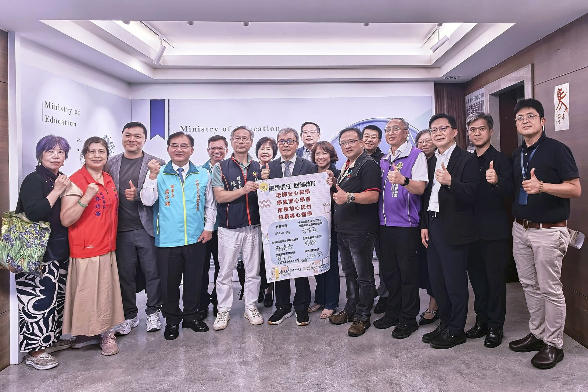

師鐸獎是肯定 國教盟：教師節的禮物還要有制度支持
回應教長行政減量談話 籲公布可驗收進度、補上輔導職務待遇
115年師鐸獎、教育奉獻獎及資深優良教師表揚大會昨（22）日舉行。教育部長鄭英耀在致詞中談到教師待遇、行政減量與專業支持，並表示將持續簡化校務評鑑、整併填報系統，減少教師行政負擔。國教行動聯盟（簡稱「國教盟」）表示，肯定教育部再次把行政減量列為教師支持重點，但教師節的支持不能只停在表揚與祝福，下一步應把政策化為第一線可感受、社會可檢驗的制度成果。
國教盟理事長王瀚陽表示：「師鐸獎是對優秀教師的肯定；對更多每天在校園承擔教學、行政與輔導責任的老師，政府送出的教師節禮物，應該是少一點重複行政、多一點陪伴學生的時間，並讓承擔專業責任的人得到相對應的制度支持。」
第三年追蹤行政減量：方向已經有了，現在要看落地多少
國教盟自2024年教師節起持續追蹤學校行政減量，當年提出簡化表單、避免重複索資與明確責任分工；2025年進一步要求資料一次蒐集、跨單位共用。今年已是第三年，檢視重點不再只是「有沒有宣布減量」，而是學校實際少了哪些重複填報、哪些評鑑與訪視完成整併，以及教師究竟多拿回多少時間投入學生。
教育部在2025年底公布教師待遇調整時，曾說明將以停辦、整併、降低頻率及運用既有資訊等方式推動行政減量；鄭英耀部長昨日又提出簡化校務評鑑、整併填報系統等方向。國教盟認為，兩次政策訊號方向一致，現在應進一步公開可驗收的執行清單與期程，避免中央宣布減量後，地方或不同業務單位仍以不同格式索取相同資料。
協助國教盟持續追蹤的一位資深輔導主任反映，近年確實感受到部分表單整併、成果資料簡化，以及部分實體訪視改採書面審查，現場準備負擔有所降低；但在其工作經驗中，家庭教育與輔導統計仍存在重複索取資料的情形，不同評鑑之間也還有重複準備的空間。國教盟指出，這些第一線經驗應作為後續查核起點，而不是把單一學校經驗直接推論為全國狀況。
教育部談學生身心支持，輔導教師的制度缺口也應一併處理
鄭英耀昨日也提到社會情緒學習及地方諮商輔導資源。國教盟表示，若政策持續強化學生心理健康與校園輔導體系，就應同步檢視第一線輔導教師所承擔的法定責任與制度支持。依現行《學生輔導法》第12條，高級中等以下學校輔導教師須規劃發展性輔導措施、連結校內外資源、執行介入性輔導，並評估轉介處遇性輔導的適切性。
現行《教師待遇條例》第13條將職務加給對象列為兼任主管職務者、導師或擔任特殊教育者，第14條則規範相關職務加給的給與條件與支給數額；專任輔導教師並未被明列為職務加給對象。國教盟因此主張，應就專任輔導教師的工作性質與責任，提出相應的法制及支給方案，並研議《教師待遇條例》第13、14條等相關規定的修正。
公共政策網路參與平臺「建請政府研擬並增設專任輔導教師之『輔導職務加給』」提案已於9月4日通過5,000人附議門檻，教育部已於9月14日在平臺表示，將於11月4日前完成具體回應。國教盟已於9月11日公開主張，通過附議門檻不代表加給已獲核定，因此教育部的正式回應應具體說明適用範圍、法制途徑、經費估算、支持配套與實施期程，而不是只停留在原則性研議。
加給不是用「接案量」換來，待遇與專業支持要一起設計
國教盟重申，若建立輔導職務加給，基本加給不宜以接案數或結案速度作為發放條件。學生個案的複雜程度、危機風險及跨系統協作需求不同，案量與工作負荷資料可以用來協助分案、補充人力與安排督導，但不宜直接等同於單一教師的績效。
同時，待遇改善不能取代專業支持。教育部與地方主管機關仍應明定督導窗口、危機個案支援及跨系統轉介分工，讓第一線教師遇到高風險或高度複雜個案時，知道由誰共同承接。這也能使輔導品質的檢視回到專業程序、必要紀錄與服務成效，而不是另外增加大量表單。
國教盟提出四項教師節後續檢驗
一、公開行政減量進度。教育部會同地方主管機關盤點重複索資，公布取消、整併及降頻項目、主責單位與完成期程，讓第一線與社會都能檢視。
二、整合填報與評鑑資料。在保護個資及保留必要監督的前提下，推動共通佐證資料共享、評鑑時程協調及合併準備，優先使用既有資料，避免學校反覆整理同一份資料。
三、11月4日前提出輔導職務加給具體回應。針對適用對象、法制途徑、支給標準、經費來源、配套及實施期程逐項說明；國教盟主張同步研議《教師待遇條例》第13、14條等相關法制。
四、待遇與專業支持同步補上。建立督導、危機支援與跨系統轉介機制；基本加給不與接案數或結案速度綁定，工作負荷資料應優先用於人力配置與支持。
國教盟強調，連續第三年追蹤行政減量，並不是否定已經完成的改革。已經改善的措施應被看見，尚未解決的問題也要有後續處理。教師節真正能留下來的，不只是一天的掌聲，而是老師隔天回到學校後，確實少一點重複工作、多一點陪伴學生的時間；承擔更高專業責任時，也有合理待遇與團隊支持。

新聞聯絡人
- 國教行動聯盟理事長 王瀚陽 電話 0983-097-165
參考資料｜供查核及媒體參考
- 聯合報（2026年9月22日）。〈教長祝教師節快樂！師鐸獎得主可帶薪出國進修 明年推教學創新計畫〉。
https://udn.com/news/story/6885/9769732 - 國教行動聯盟（2026年9月11日）。〈輔導職務加給提案附議達標 國教盟：教育部應主動備妥待遇方案〉。
https://aabe.org.tw/press/2026-09-11-counselor-allowance-petition-threshold/ - 中央社（2026年9月11日）。〈民眾提增設輔導職務加給 公共政策平台達附議門檻〉。
https://www.cna.com.tw/news/ahel/202609110087.aspx - 教育部國民及學前教育署（2025年12月31日）。〈提高高級中等以下學校導師職務加給、鐘點費、增給行政工作獎金及擴大偏遠地區傷害保險適用對象〉。
https://www.moe.gov.tw/News_Content.aspx?n=9E7AC85F1954DDA8&s=8D1486E0B9D99902 - 《學生輔導法》第12條。教育部主管法規共用系統。
https://edu.law.moe.gov.tw/LawContent.aspx?id=GL001380 - 《教師待遇條例》第13、14條。教育部主管法規共用系統。
https://edu.law.moe.gov.tw/LawContent.aspx?id=GL001446 - NOWnews今日新聞（2024年9月27日）。〈教師仍難專注本職 國教盟5點呼籲教育部落實學校「行政減量」〉。
https://www.nownews.com/news/6536804 - i-media愛傳媒（2025年9月26日）。〈教師節前夕疾呼！教團籲推動行政減量3指標、調高導師費、增加輔導加給〉。
https://www.i-media.tw/Article/Detail/41914 - 公共政策網路參與平臺（2026年9月14日）。〈建請政府研擬並增設專任輔導教師之「輔導職務加給」〉教育部回應。
https://join.gov.tw/idea/detail/a54af383-3ee9-4338-9990-e17468090164
本頁為 2026 年 9 月 23 日對外發布新聞稿之官網存查版，內容與發布版一致、逐字照登、未經改寫。媒體採訪請聯繫上方新聞聯絡人。